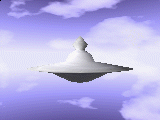
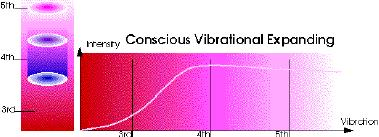
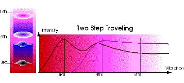
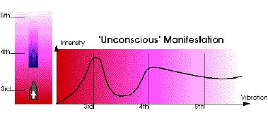

Rene K. Mueller
As already mentioned in Interdimensional Traveling, there are some Alien-Cultures well aware of its relation of different planes we refere as astral planes (Earth-Aura) or etheric planes (more subtle and planet/solarsystem independent).
There are some reasons using an externally created ship:
Using an internally created ship:
The question to take internally or externally created ships is
mainly more a question of awareness and ability as of neccessity. On higher realms, especially traveling through etheric-gates and doorways,
there is a kind of locking - only with balanced energies you are able to
transfer, otherwise you aren't able to find the entrance, it will be invisible
for those who aren't prepared. On lower-planes as astral/physical-planes related to Earth, most
alien-cultures visit us with externally created ships for protection.
Some light-entities visited people just by appearance in human-like
shape-forms, but in density of light instead of flesh. We may say, they are
self-realized to manage their own vibration of their Light-Body (as conscious
unification of Higher-Self presences as Multi-Dimensional Self). The view whether a ship is internally or externally created is
smoothly:
Maybe another view will help to answer the question, ie. two conscious
internally created ships:
The question whether use internally or externally created ships
maybe partly answered by: All ships are internally created in a way - but until they are
manifested, several manfifestation-steps are required, dependent on the
consciousness and awareness. If more unconscious steps are
made to manifest something generally, more externally it becomes, and
also more separeted from The Source.  The ship is still present on higher-levels (astral/etheric), but it does
expand its appearance into lower planes too (ie. physical). For some physical appearances into physical plane you may look at
Pleiadian - Beamships with pictures. Some additional thoughts and explanations: The best and conscious way is, to hold the whole form, from 5th dim. to
4th/3rd dim. reality as Conscious Vibration Expanding. This implies high
degree of realization as already mentioned (female & male balance):  For a good example for concsious expaning you may go direct to
Out Of Body Experience Corner to get some ideas about internally
techniques. The second case is used often by advanced civilizations: Two Step
Traveling  Ie. a 5th dim. group would like to visit 3rd dim. reality. They are
first an energetical agreement, based on their wish and will to lower their
vibration. After reaching astral-plane, ie. of a planet they would like to observe, or
most to interact, they change the ship. This transfer is a kind of
karmic-security for those who accompanied them until 4th dim.
exchange-station. After this change, they use other thought-patterns which are highly
independent of the thought-forms they used before. This second ship is more unconsciously manifested as the
etherical ship. With the astral-ships it's quite easier to enter or
expand into physical density of reality, without being conscious of
the higher-planes: only the lowering of astral-ship to physical planes needs
consciously managed. The way the most ships are made here (on Earth): "Unconscious"
Manifestation  As mentioned above, the thoughts and ideas are in non-structured form in
astral-plane, ie. scientist, (beings with high degree of connection to
brain/mind) use this patterns and shift and focuse this pattern and finaly gave
them a structure: they call it researching or developing. The main (conscious) agreement of manifestation is on physical plane, but
also on astral-plane: the will of the scientists or the group. The power
of will, or sometimes felt as pressure or in a bad way as stress, is the focus
for the thought-patterns. The mechanics are guided by a physical plan, and also by the will to use
their brains as receiver and collector of the thought-patterns, which are
already formed by the ideas of the scientist. The physical plan is a kind
of common pattern, the drawing makes and allow the access to
astral-plane, where the ship is already formed. Ie. pictures generally connect us to their astral-manifestations - as some
people takes pictures of those they love, being connected in thoughts, how true!
The physical matter/material which is used, is astral-matter too, with the
expansion to physical plane. The mechanics manage their physical shape with
machines, but in true meaning, they first manage the astral-counterpart,
by the astral-counterparts of the machines ... I could continue with the manifestation steps to build ie. a Space-Shuttle,
but the whole process, in this case, is quite unconscious of the
higher-planes as ie. astral-plane. This lack of perception implies and define the usage of the
ship: only physical plane. The separated manifestations-steps by scientists and many specialized
mechanics for one single manifestation, and they are all unconscious of
the interdimensionality of their own work - hm, how to say, even an
Unconscious Manifestation. For more general thoughts, you may read
Inner Realization vs. Technology, even about
Perception of Subtle Realms.
If you enter into a plane with its own reality, and you interact (karma
simply means only action), you may leave the plane only if all acts
are balanced which are created or interfered.
The ships operate as a kind of vibrational-buffer, some other devices
may operate to interface to perceive lower-vibrational realities, without
lowering own vibrational level (of the body).
With an externally ships as vibrational-buffer may get the
perception of interfering covered - lack of perception of what's going on when
visiting certain planes: ie. karmic-traps were not recognized as they
are.
They aren't covered, their presence is well perceivable by others, trust is
much easier to reply.
Beamship Entering Physical Plane